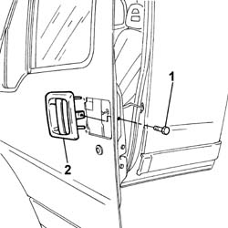

7005C10 FRONT DOOR OUTER HANDLE - R R WITH DOOR PANEL REMOVED
- Path
- Procedures > 70 FITTINGS > 7005 PASSENGER COMPARTMENT FRONT SIDE DOORS > 7005C FRONT LOCK CONTROLS > 7005C10 FRONT DOOR OUTER HANDLE - R R WITH DOOR PANEL REMOVED
- Kind
- repair procedure (removal / refitting; the operation number is the code)
- Applies to
- all engines; all production periods
- Interactive page
- https://sloeber94.github.io/elrnDB-fDct/en/#/244001427
Applies to: all engines; all production periods
 Removing
Removing
 Refitting
Refitting- Remove the water shield.
1. Undo the bolts fixing the handle.
2. Remove the side door exterior handle.

Applies to: all engines; all production periods
Refitting
Removing- Fit the handle in the special housing in the door.
- Fasten the handle to the door tightening the fixing bolts.
- Clean the area where the water shield is fastened to the door frame in order to remove any residues and make sure that the shield sticks properly.
- Fasten a new water shield to the door frame.